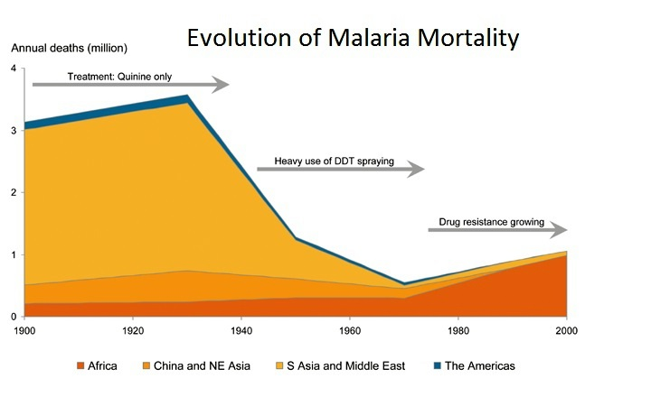

The parasitic disease known as malaria continues to devastate millions of people. It is acute in Africa, where over two million people die per year—most of them children. The protozoan (single-celled) parasite is spread by the female mosquito seeking a blood meal that provides critical protein for her developing eggs. Once inside the person, malaria parasites hide within the victim's red blood cells—evading circulating serum antibodies. They eat the hemoglobin (the red protein that carries oxygen) in the cell, and they undergo asexual reproduction. At the right time of the malaria life cycle, the red blood cell is caused to burst, releasing hundreds of new parasites plus the toxic products of metabolism. These waste products cause the characteristic chills and fevers associated with malaria. There are over 550 known variants of human hemoglobin, but the hemoglobin-S mutation produces the tragic condition known as sickle-cell anemia. The name comes from the sickle-like shape. Some of the red cells adopt due to the corrupted (mutated) hemoglobin molecules inside. When these red cells become distorted, they can no longer operate as normal red cells. They "sickle" and then clog smaller blood vessels of the patient resulting in extreme pain, strokes, and possibly death. People homozygous for sickle-cell anemia (both parents provide the mutant gene to the offspring) usually die before adolescence. But those offspring that are heterozygous (receiving a mutant gene from just one parent) can lead normal lives. Sickle-cell anemia is found in three areas of the world where malaria is also found. Those with sickle-cell anemia in the same area are quite resistant to a deadly strain of malaria because their atypical blood cells collapse or "sickle," destroying the developing parasite. Evolutionists maintain this is a "beneficial mutation" or overdominance. But is it? Put another way, is sickle-cell anemia a fitting example of the continuous genetic expansion required by evolution? Science says "No." Population genetic studies show that conservation of the created kinds is the biological rule, not an upward/onward, fish-to-philosopher series of changes (macroevolution). If a Darwinist wants to say that a harmful mutation in the oxygen-carrying capacity of the blood is "good"—they're welcome to do so. But one has to wonder how many evolutionists would willingly subject themselves to this mutation (if it were possible)—as they prepared to go to a malaria zone. Evolutionists also point out that the drugs used to treat malaria are losing their effectiveness as the parasite develops a resistance. This is also true of the mosquito carriers as they become increasingly resistant to pesticides. Creationists point out that this is—once again—minor variation within the created kinds. The animals involved remain the same genus and species.